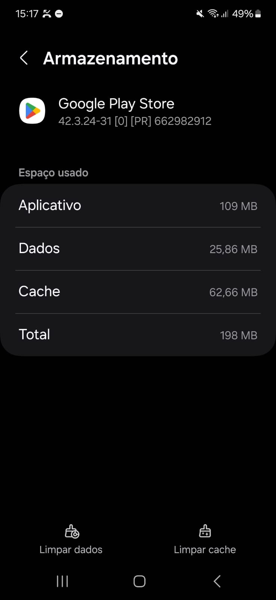
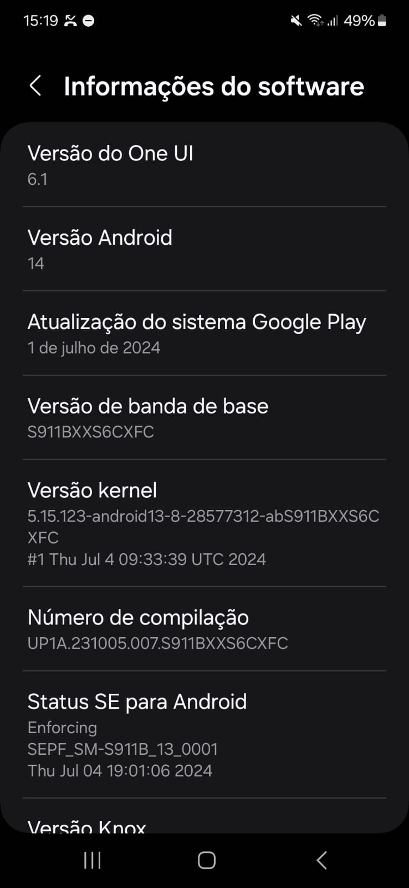

Especificação Suplementar
Esta técnica esta definifa em Especificação Suplementar
Aplicação
Para esta técnica, dividimos nas categorias baseadas na FURPS e na ISO/IEC 25010, e incluímos os requisitos não funcionais dessas áreas, elicitados através de brainstorm:
- Usabilidade
- Confiabilidade
- Desempenho
- Portabilidade
- Segurança
E categorias adicionais que julgamos necessárias:
- Design
- Observações legais
- Observações físicas/implementação
Usabilidade
Facilidade com que os usuários conseguem utilizar um sistema ou software para atingir seus objetivos.
| Requisito | Descrição |
|---|---|
| RNF | O app deve fornecer feedbacks para o usuário como mensagens de erro. |
| RNF | O app deve ter a hierarquia lógica das ideias. |
| RNF | O app deve mostrar a localização do usuário dentro do app. |
| RNF | O app deve ser acessível para pessoas com deficiências visuais. |
| RNF | O app deve mostrar botões para o usuário confirmar suas ações, evitando erros. |
| RNF | O app deve permitir a mudança de idioma. |
| RNF | O app deve ser acessível para pessoas idosas. |
| RNF | O app deve ser consistente e padronizado. |
| RNF | O app deve ter um menu de ajuda. |
| RNF | O app deve permitir descrição por áudio e atalhos de teclado. |
| RNF | O app deve ter cores contrastantes. |
| RNF | O app deve permitir configurações de acessibilidade como cor e fonte. |
| RNF | O app deve informar o status do sistema. |
Confiabilidade
Capacidade de um sistema ou software de funcionar de maneira consistente e correta, sem falhas, durante um período específico.
| Requisito | Descrição |
|---|---|
| RNF | O app deve permitir a recuperação de falhas. |
| RNF | O sistema deve rodar no browser. |
| RNF | Sincronizar dados de forma confiável entre diferentes dispositivos. |
| RNF | Garantir que os dados dos aplicativos e dos usuários sejam validados e armazenados com precisão para evitar corrupção ou perda de dados. |
| RNF | O sistema deve prevenir erros. |
| RNF | O sistema deve ficar no ar 24/7. |
| RNF | Realizar atualizações regulares e manutenção para corrigir bugs, melhorar a performance e manter a confiabilidade geral da plataforma. |
Desempenho
Medida da eficiência com que um sistema ou software realiza suas tarefas, incluindo velocidade de processamento e uso de recursos.
| Requisito | Descrição |
|---|---|
| RNF | O sistema deve ser eficaz em qualquer tipo de rede. |
| RNF | Lidar com picos de tráfego e alta demanda. |
| RNF | O sistema deve carregar o conteúdo das páginas de forma rápida. |
| RNF | O sistema deve retornar o objeto de pesquisa rapidamente. |
| RNF | Garantir que as transações de compra e download de aplicativos sejam processadas rapidamente. |
| RNF | Otimizar o tempo de download e instalação de aplicativos. |
Portabilidade
Capacidade de um sistema ou software de ser utilizado em diferentes ambientes ou plataformas sem a necessidade de grandes modificações.
| Requisito | Descrição |
|---|---|
| RNF | O aplicativo deve funcionar em qualquer dispositivo Android. |
| RNF | O sistema deve funcionar bem em qualquer navegador. |
| RNF | Assegurar que a Play Store funcione de maneira consistente em diferentes dispositivos e sistemas operacionais. |
| RNF | O sistema deve se adaptar a todo tipo de tela. |
Segurança
Proteção de um sistema ou software contra ameaças, garantindo integridade, confidencialidade e disponibilidade dos dados.
| Requisito | Descrição |
|---|---|
| RNF | Implementar medidas de segurança para proteger a plataforma contra ataques cibernéticos, malware e outras ameaças. |
| RNF | Criptografar dados sensíveis do usuário. |
| RNF | Detectar comportamentos maliciosos de apps. |
| RNF | Não deve permitir que cadastrem apps maliciosos. |
| RNF | Garantir que as políticas de privacidade da Play Store e dos apps sejam garantidas. |
| RNF | O usuário deve saber sobre os dados compartilhados com um app. |
| RNF | O sistema deve seguir a LGPD. |
Design
Concepção visual e estrutural de um sistema ou software, que impacta a aparência, a funcionalidade e a experiência do usuário.
Identidade Visual da Google Play Store
A identidade visual da Google Play Store é essencial para manter a consistência da marca e garantir uma experiência de usuário coesa. Abaixo estão os elementos chave da identidade visual da Play Store.
Logotipo
O logotipo da Google Play Store é um ícone que combina uma forma triangular e colorida com o nome "Play Store". O ícone é composto por um triângulo de cores variadas que representa a diversidade de conteúdos disponíveis na plataforma.
- Logotipo Principal:

Cores
A paleta de cores da Google Play Store é vibrante e moderna, refletindo a diversidade e a energia da plataforma. As principais cores incluem:
- Primária:
Tipografia
A tipografia utilizada pela Google Play Store é simples e legível, refletindo a clareza e a acessibilidade da plataforma. A fonte primária é:
- Fonte Principal: Roboto
Ícones e Botões
Os ícones e botões na Google Play Store são projetados para serem intuitivos e fáceis de usar. Eles geralmente apresentam um design limpo e cores contrastantes para garantir visibilidade e facilidade de navegação.
- Ícones:


Uso da Identidade Visual
- Uso do Logotipo: O logotipo deve ser exibido em tamanho adequado e em contraste com o fundo para garantir a legibilidade.
- Paleta de Cores: Use as cores da paleta de forma consistente para criar uma experiência visual coesa.
- Tipografia: Use a fonte Roboto para manter a clareza e a consistência textual.
Observações legais
A Play Store tem algumas diretrizes de uso e serviço, e todos os usuários estão sujeitos a elas. Abaixo, algumas dessas diretrizes:
Observações físico/implementação
O sistema deverá funcionar em qualquer dispositivo android e nos navegadores modernos (Chrome, Safari, Firefox, Opera, edge ... )
E o aplicativo ocupará em média 135Mb
Exemplo detalhado de informações de espaço e versão android:  
Histórico de Versões
| Versão | Data | Alterações Principais | Autor |
|---|---|---|---|
| 1.0.0 | 15-08-2024 | Lançamento inicial da especificação | Arthur Ribeiro, Carlos Alves e Hugo Queiroz, |
| 1.0.1 | 16-08-2024 | Arrumando o especificação | Carlos Alves, Cecília Quaresma e Hugo Queiroz, |
| 1.0.2 | 22-08-2024 | Adição de observações legais | Arthur Ribeiro, Carlos Alves, Cecília Quaresma, Larissa Vieira e Lucas Queiroz |
| 1.0.3 | 05-08-2024 | Alteração de categoria de requisito | Lucas Queiroz |